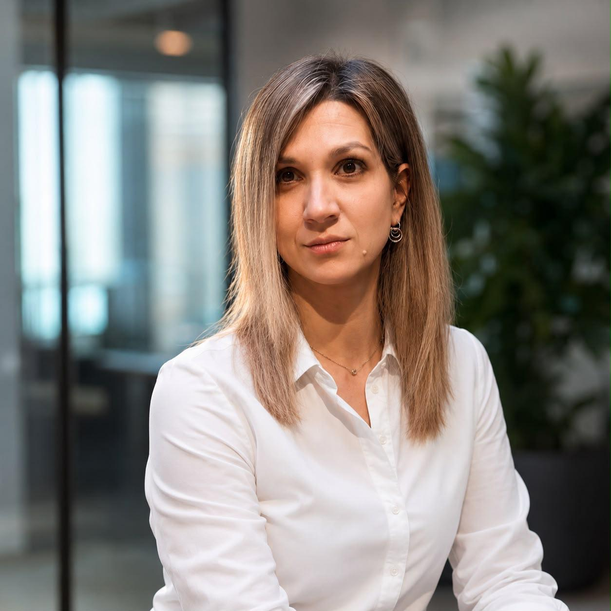

IT Recruitment
Подбор IT-специалистов и технических сотрудников с учётом стека, опыта и задач команды.
Помогаю компаниям находить IT-специалистов, коммерческие команды и руководителей. Подключаюсь к отдельным вакансиям или беру подбор на постоянное сопровождение — удалённо и по договору.

Не просто отправляю резюме. Понимаю задачу бизнеса, оцениваю соответствие кандидатов и сопровождаю найм до согласованного результата.
Если вам нужен специалист по подбору персонала, я помогу найти IT-специалистов, сотрудников отдела продаж и руководителей. Работаю из Тбилиси и веду проекты удалённо.
Подбор IT-специалистов и технических сотрудников с учётом стека, опыта и задач команды.
Поиск менеджеров по продажам, тимлидов и коммерческих руководителей.
Точечный подбор руководителей и ключевых специалистов с вниманием к управленческим компетенциям.
Внешняя поддержка найма, коммуникация с руководителями и сопровождение вакансий.
Помощь в организации адаптации новых сотрудников и взаимодействия с командой.
Структура интервью, критерии оценки, прозрачный процесс и обратная связь.
Помогаю специалистам показать релевантный опыт под конкретную вакансию и увереннее пройти интервью.
Помощь с резюме и собеседованием ↗Анализ требований конкретной компании, структура CV, акцент на фактах и достижениях.
Пробное интервью, разбор сложных вопросов, обратная связь и работа над самопрезентацией.
Каждый проект начинается с погружения в задачу и заканчивается понятной обратной связью.
Уточняем требования, задачи роли и критерии отбора.
Определяю каналы и нахожу релевантных кандидатов.
Интервью, короткий список и координация с компанией.
Сопровождение оффера, выхода и при необходимости адаптации.
Работаю с компаниями и командами, которым важен не формальный поток кандидатов, а качественный подбор под реальные бизнес-задачи.
Подробнее об опыте ↗Автомобильный холдинг · Узбекистан
Внешний подбор персонала для разных департаментов Beny Motors: работа с запросами руководителей, поиск и первичный отбор кандидатов, интервью и сопровождение найма.
Закрываем конкретную потребность в подборе.
Веду параллельные позиции по согласованным приоритетам.
Рекрутинг на постоянной основе с понятным объёмом и регулярной связью.
Работаю удалённо из Тбилиси с русскоязычными командами в разных странах. Условия договора и расчётов согласуем отдельно с учётом юрисдикции.
Да. Возможны разовые проекты, несколько вакансий или регулярная поддержка рекрутинга.
Да, сотрудничество возможно по договору оказания услуг через зарегистрированное в Грузии ИП; конкретный договор согласовывается до начала работы.
Расскажите о команде, позициях и сроках. Предложу подходящий формат внешнего рекрутинга.